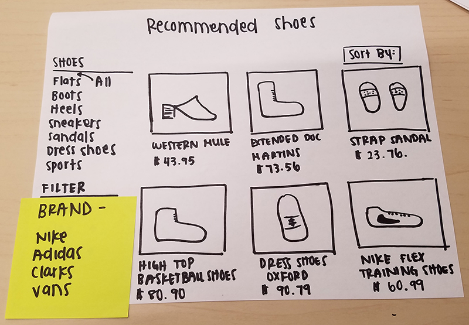
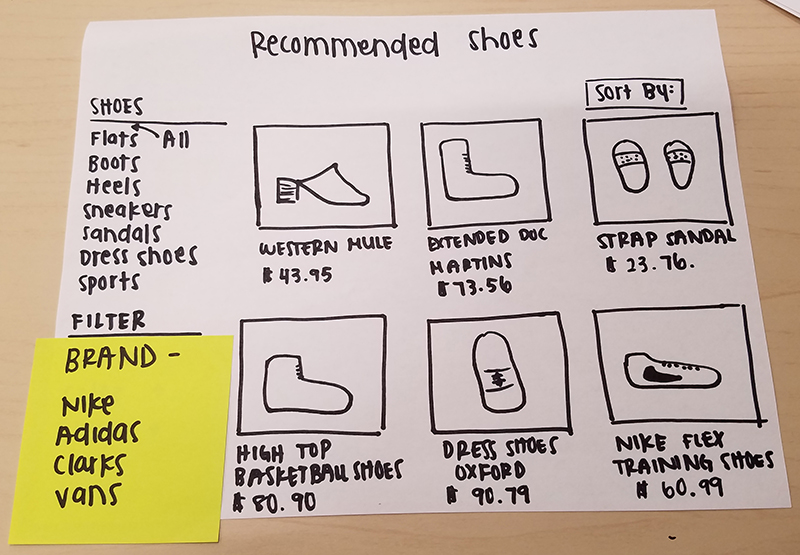
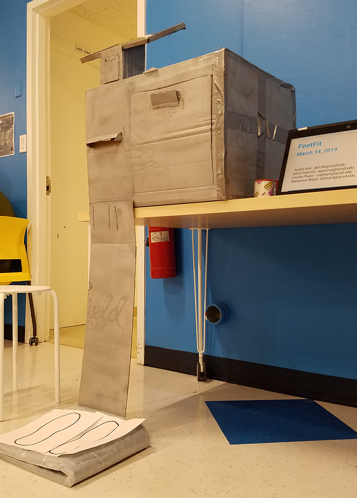

FeetFit

Context
Description
FeetFit is a point of purchase (POP) shoe kiosk made for UCSD's Prototyping studio that aims to accurately measure the users' feet and quickly deliver the right shoes.
Responsibilities
- Role: UX and Graphic Designer
- Team Size: 4
- Tools: Illustrator, Milanote, Pen and Paper
- Skills: UX Design, Prototyping, Graphic Design, User Research, Usability Testing, Presentation
- Time: Jan 2019 - Mar 2019
- Prototyped a kiosk for public setting by creating persona, storyboard, wireframes, interviews, usability testing, and moodboards.
- Designed a poster using grids, hierarchy, and adherence to style guide.
Problem
The current in-store shoe shopping experience is heavily reliant on interaction with store employees and which can place pressure on the consumer.
Solution
FeetFit is a POP) shoe kiosk that allows shoppers to browse shoes, measure their feet, and try on pairs at their own convenience.
Online Research
The team first explored the problem space by finding common issues users complained about. They included:
- Struggling to find the right fit
- Lack of standard shoe sizes across different brands.
- Difference in one's own feet sizes.
- Return Issues
User Interviews
We guerilla interviewed potential users and asked questions like the time they spent shoe shopping, why the bought them and where, how easy the experience was, and what it was like if they bought shoes for someone else.
Persona
We aggregated our findings from research and interviews into personas that reflected the users we each advocated for. My persona advocated for the elderly and the struggles they may face.
Our target age was 16-30 for people who weren't sure about their foot size (for reasons like differing foot sizes) and wanted to quickly find the right fit.
Storyboard
We made storyboards to empathize and understand how users may approach and use the kiosk in certain scenarios.
Sketches
With a better grasp of how users would interact with the kiosk, we sketched out thumbnails of how it would look and where the functions would be.
Lo-Fi Wireframes
We first mapped out a flow for the digital screen by considering user needs (measuring and finding shoes, retrieval, payment, etc.) and then approximating layouts using thumbnails before moving onto more accurately-sized paper prototypes.
 

Paper Prototype Testing
Next we made a paper prototype using fleshed-out wireframes based on our thumbnails to test our current digital screen flow by guerilla testing with and eliciting feedback from previous interviewees.
Testing mainly showed issues with a lack of a back button, no signifier to place feet (due to it being paper and not with the full kiosk), unclear wait times, and a disconnect between user expecations and screen functions.
These problems were solved by adding a back button, including instructions on where to place feet, showing wait times on the tablet, and clearer instructions throughout the app.
Moodboard
I used Milonote and consulted the UI designer to make a quick moodboard for her to base a style guide on. The moodboard reflects the diverse age range and warm and friendly feeling our kiosk was supposed to portray.

Digital Prototype Testing
Our UI designer created a digital prototype and we tested again. This time the main issues involved a lack of cues for payment, limited functional shoe selections, need for UI clarity (such as making buttons more noticeable), and a lack of a thank-you screen after a purchase.
We addressed these issues in the next iteration by adding more steps to the payment process, implementing more selectable shoes, increasing color contrast, and adding a thank-you-screen upon a successful purchase.
Cardboard Prototyping
While the UI designer was designing, the rest of us were constructing the cardboard prototype using box-cutters, rulers, and tape. After forming the basic structure, door, tablet-holder and measurement device, we spray painted the base (we couldn't add on more colors due to time).
Poster Design
I made a poster for the final presentation using brand colors and high-quality stock-photos to illustrate the basic steps of the FeetFit kiosk.
Final Presentation
In the final presentation, we pitched the FeetFit kiosk by presenting our cardboard prototype, poster, and demonstration to receive feedback on our work.
Reflection
FeetFit was a particularly challenging project due to the time constraints and disagreements we had as a team, but I am grateful for the opportunity to develop my prototyping, communication, and teamwork skills.